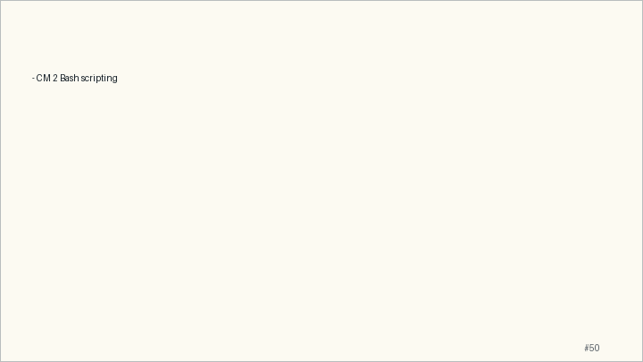

Main Path
- Start from the question: When does the shell execute commands, and when does it just transform text?
- Build the model: A shell script is a small program whose data model is arguments, variables, statuses, files, and streams.
- End with a checkable action: Students can read a script by following expansion, command status, branches, loops, and functions.
- Keep only this slide on the horizontal path during the live lecture.
